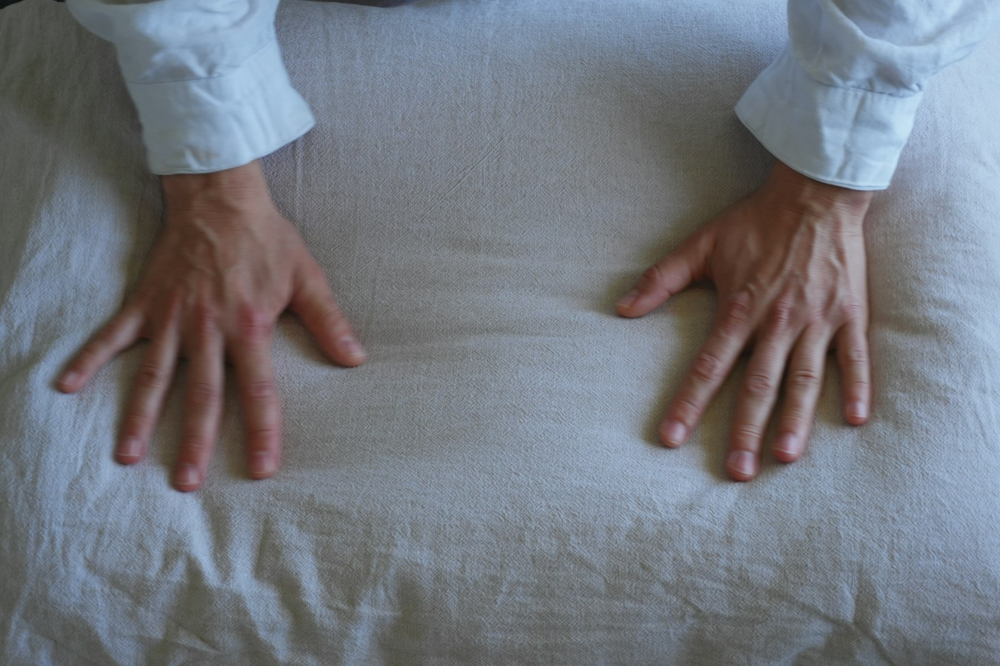

SGAdd photo
Sujay Godala
Co-founder
Why I’m building this…
Captrail is a low-cost nailfold microscope that uses AI to flag early signs of autoimmune and vascular disease, so a doctor can take a closer look sooner.
“The earliest signs of systemic sclerosis can show up in vessels thinner than a hair. Everyone deserves to have them looked at, not just people near a specialist clinic.”
“Captrail doesn’t diagnose. It gives a doctor a clearer, earlier reason to look closer.”
“If the hardware fits on a desk and costs a fraction of clinical equipment, screening can go where patients already are.”
The Captrail scan
Captrail turns a USB microscope, a 3D-printed finger cradle and a calibration slide into a repeatable scan: every image measured in micrometers, every flag explained, and every decision left to a clinician.
How it works
Hardware at the bottom, software on top. Scroll, or tap any layer, to see what each one does.
Hardware to software
Four physical parts feed one software pipeline. What comes out is a set of measurements and flags a doctor can check, never a diagnosis.
Who it's for
The build
One 3D-printed part, a USB microscope with its own stand, and a few inexpensive supplies. No motors, no custom mount, no second focusing mechanism.
| 01 | Celestron Labs Digital 2MP Handheld Microscope + included stand1920 × 1080 images, 20–200× advertised magnification, built-in LED lighting | $ TBD |
| 02 | Attune 3D-printed finger restSteadies the finger without pressing on the nailfold | $ TBD |
| 03 | MUHWA 0.01 mm calibration slide10 µm divisions to convert pixels into micrometers | $ TBD |
| 04 | Mineral oilOne tiny drop on the nailfold cuts surface glare | $ TBD |
| 05 | Microfiber cloth and cotton swabsCleaning the lens and applying or removing oil | $ TBD |
| 06 | Black cardstock (optional)Blocks reflections and stray light | $ TBD |
Finger rest design credit: Attune (dlx-designlab). Plus a computer and the microscope’s USB cable.
Read the full build guide →Results
Scroll through each stage. Every number here comes from our own tests, and blank means we don’t have it yet.
Safety and limits
Captrail is a research prototype for screening and referral, not a diagnostic tool. It does not replace a doctor.
We get consent before imaging anyone, every time.
Whether scans are stored, how they are anonymized and who can see them.
Fill in your policyFlags are a reason to look closer. Only a clinician interprets them.
Who we are
Four students building a cheaper, faster way to spot disease in the smallest blood vessels.
Why I’m building this…
Why I’m building this…
Why I’m building this…
Why I’m building this…
Get in touch
Clinicians, researchers and anyone curious about nailfold capillaroscopy: we’d love to hear from you.
